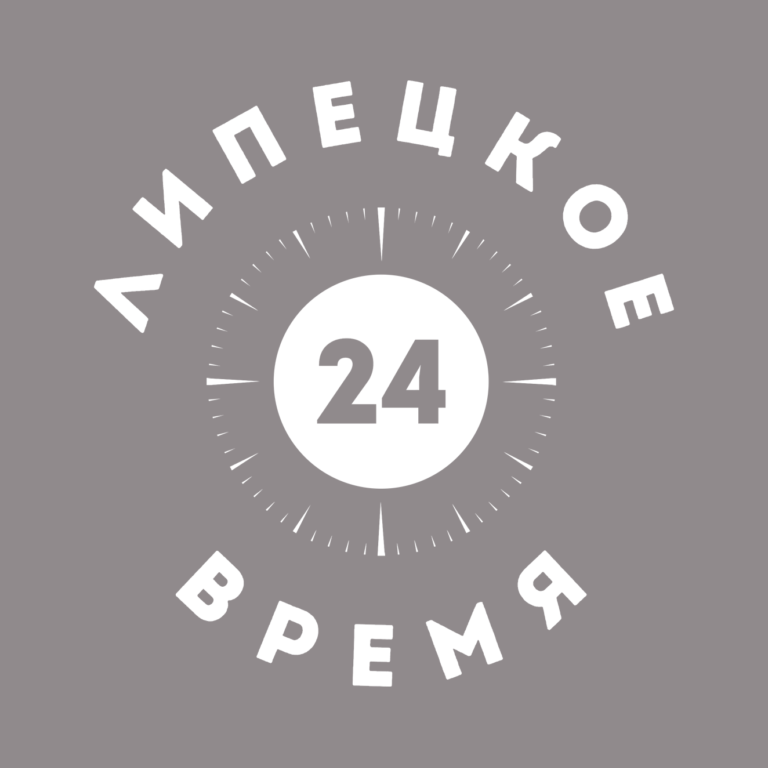
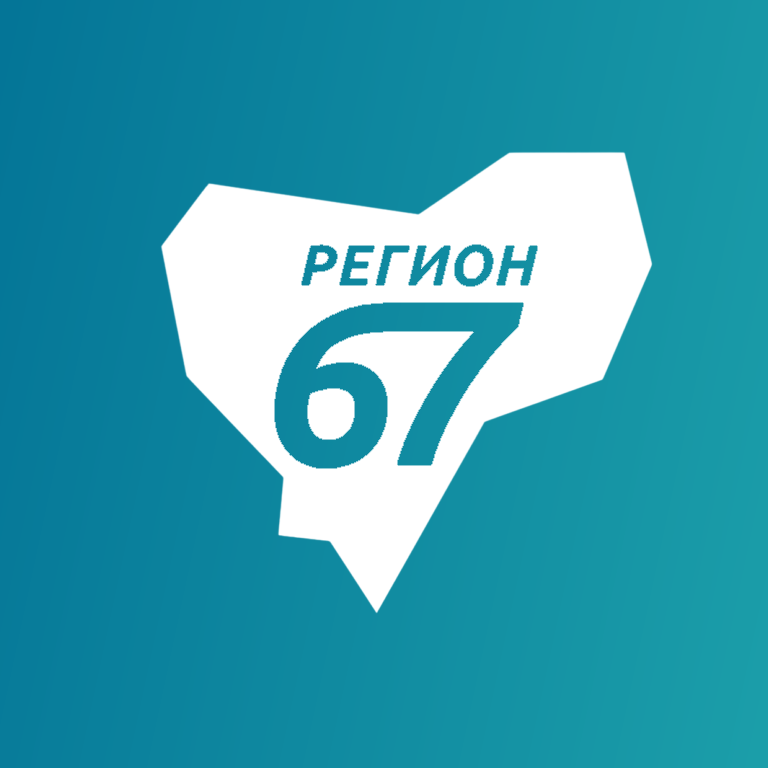

21-я кнопка, ЦФО

Мир Белогорья (Белгород)
Брянская Губерния
Губерния 33 (Владимир)
TV Губерния (Воронеж)
Барс (Иваново)
Ника ТВ (Калуга)
Русь (Кострома)
Сейм (Курск)

Липецкое время
Москва 24
360° (Подмосковье)
Первый Областной (Орёл)
ТКР (Рязань)

Регион 67 (Смоленск)
Новый Век (Тамбов)
Тверской Проспект - Регион
Первый Тульский
Первый Ярославский